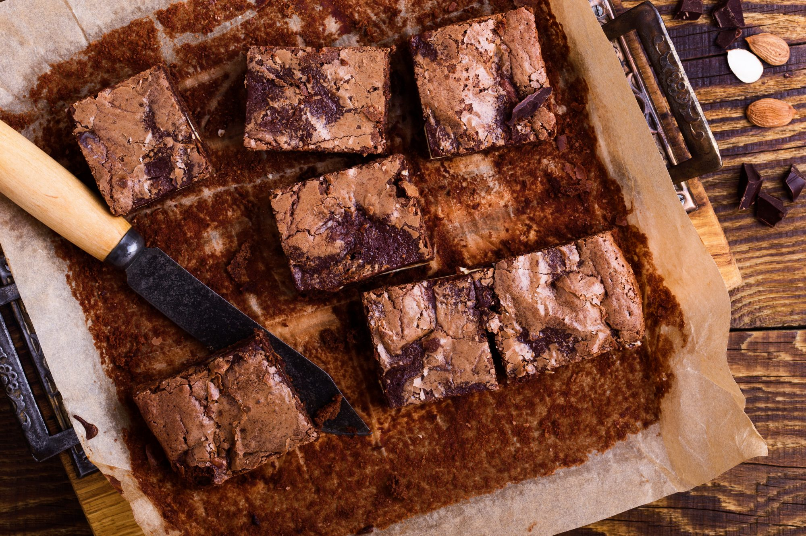

Brek's Boxed Brownies

Description
These brownies require 22-52 minutes to cook depending on pan size with around 5 minutes of preparation.
Ingredients
- 1 box brownie mix
- 3 tablespoons water
- 1/2 cup vegetable oil
- 2 Eggs
Steps
- Preheat the oven to 325°F-350°F depending on chart below.
- Grease the bottom of pan.
- Stir Brownie Mix, water, oil, and eggs in medium bowl until well blended. Spread in pan.
- Bake as directed in chart below or until toothpick inserted 2 inches from side comes out clean.
Cooking Time
- 13" x 9" pan - 350°F for 22-25 minutes
- 9" x 9" pan - 350°F for 36-38 minutes
- 8" x 8" pan - 325°F for 50-52 minutes